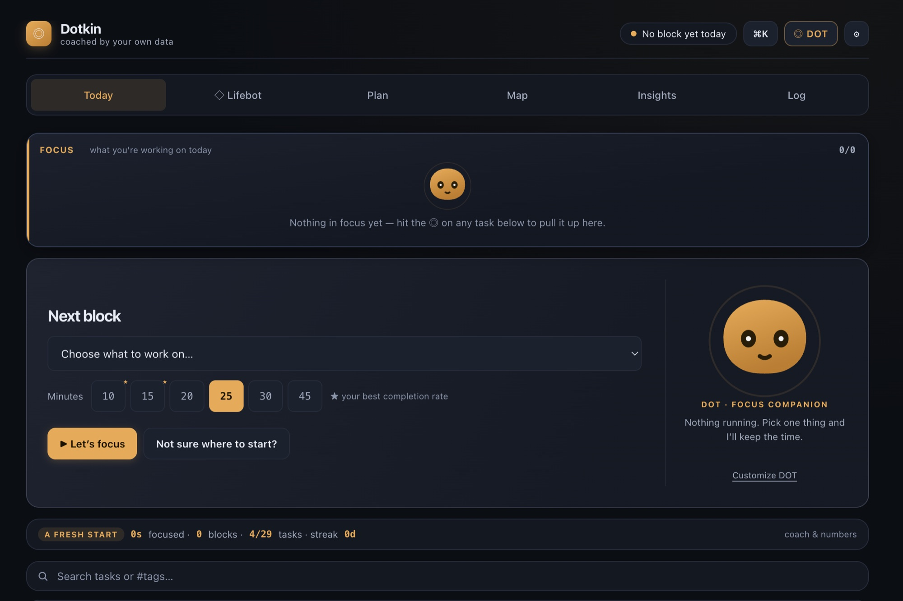
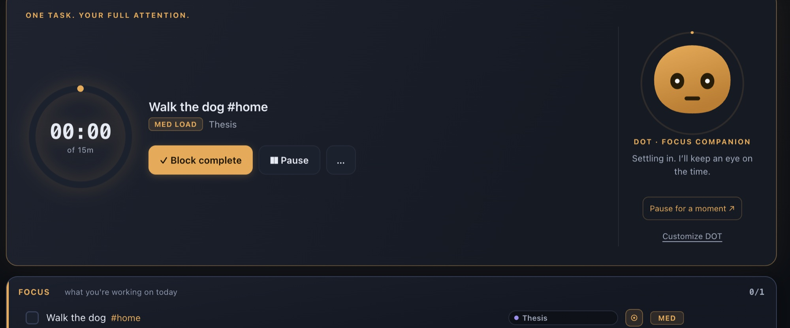
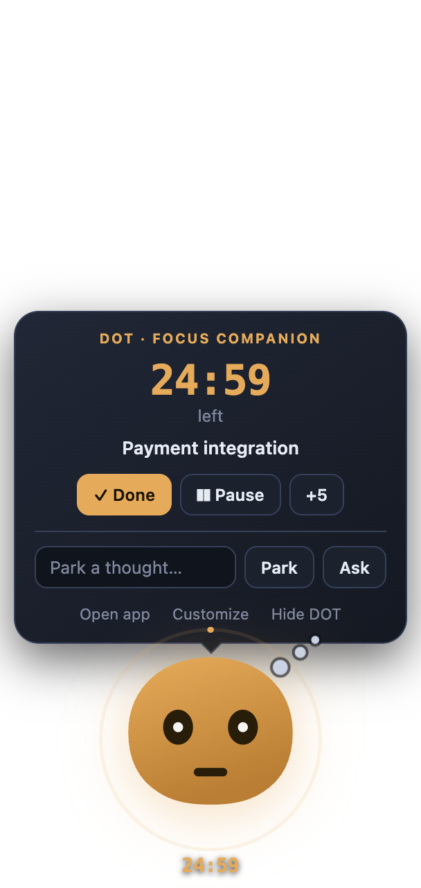
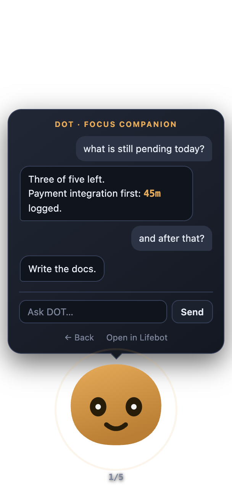
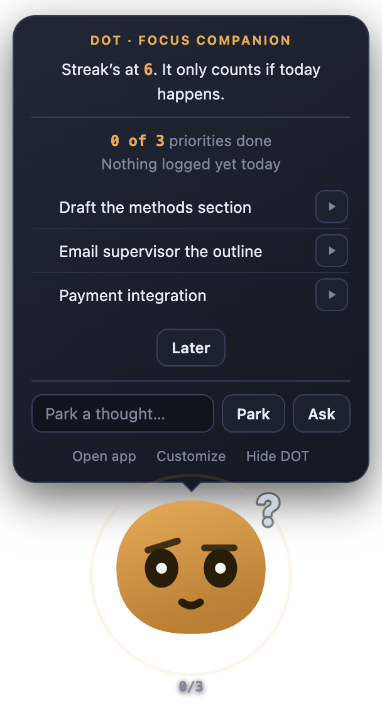
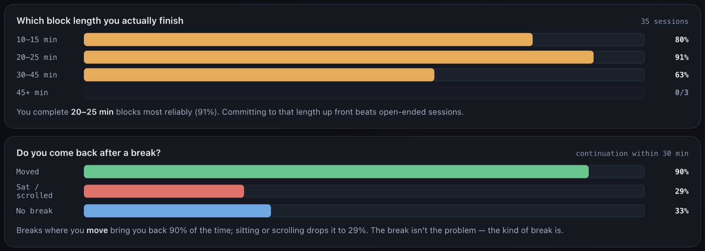
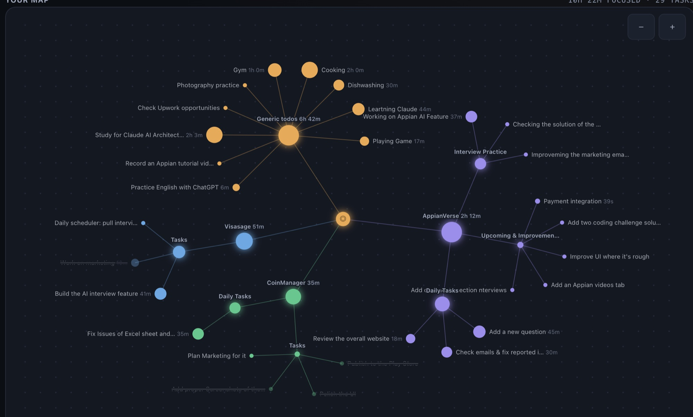
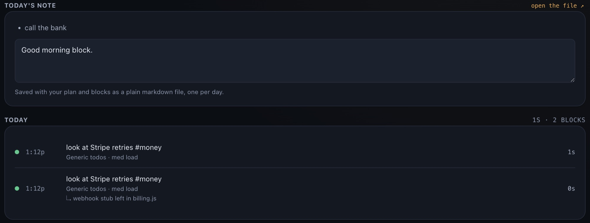

Dotkin runs your day as short, timed blocks, one task at a time. Then it tells you what your own log shows: which block length you finish, which breaks bring you back, and what a late start costs you.

Block complete and Pause. Starting a block pins that task to the Focus strip, so the strip and the timer always agree about what you're doing. When the block ends the app asks one line: where did you stop? The next block on that task shows it as Last time.

DOT is a small floating companion. It follows your cursor, blinks, and rests its eyes when you pause. Clicking it never brings the app window forward. It shows what matters right now:

Ask. A question turns the bubble into a small chat that answers from your live data in a line or two: "what's still pending?", "should I take a break?". This part uses Lifebot, which is optional.
The poke. If your usual first block is thirty minutes overdue and nothing is logged, DOT hops, chimes softly and opens with one line and your priorities. Start a block within five minutes and it cheers. Dismiss it and it glances back twenty minutes later, then yawns. Once a day, never after 2pm, and only after three logged days.


Insights are worked out on your computer from your own blocks: which length you finish, whether you come back after a break, what a late start costs. They work offline and need no key. Three logged blocks unlock the first one.

Paste in an API key from Anthropic's developer console (pay as you go, separate from a Claude subscription) and Claude answers from your blocks, tasks and streaks. It tells you when the plan is the problem.
Free, no account. Open at login is on by default, so tomorrow morning it's already waiting with the planner.
Dotkin is a desktop app. Open this page on your Mac or Windows computer to install it, or grab the file here and move it over.
Apple Silicon (M1 and later). Open the .dmg and drag Dotkin to Applications.
Download .dmg arm64 Not notarized by Apple yet, so macOS blocks the first launch. Click Done, then open System Settings → Privacy & Security, scroll down and click Open Anyway. It asks once.Windows 10 or 11, x64 and ARM64 in one installer. Adds a Start menu entry and a tray icon.
Download installer .exe Prefer no install? Portable .exe. Unsigned for now, so SmartScreen asks once: More info → Run anyway.The Map draws every project, section and task as a live graph, shown here on a demo profile with three projects and fourteen hours logged. Circles grow with focused time. Hover to trace a branch, drag a node and the rest follows on springs, click a task to start a block on it. The running block pulses and the path to it lights up.

The Log opens with today's note: the thoughts you kept and a reflection box, then every block with where you stopped. Each day is also saved as a plain markdown file. Point the notes folder at an Obsidian vault and the notes link and search there.

No account to create, no server to trust. Dotkin writes a single JSON file, readable in any text editor, and Settings shows you where it is.
| OS | Where your data lives |
|---|---|
| macOS | ~/Library/Application Support/focus-deck/focusdeck.json |
| Windows | %APPDATA%\focus-deck\focusdeck.json |
Dotkin is made by one person, Karthik, who uses it every working day. There is no company behind it, no account, no telemetry and nothing to buy. Bugs and requests go to the issue tracker.
Yes. No account, no subscription, no telemetry. The only thing that can cost money is the optional Lifebot chat, which uses your own Anthropic API key and is billed to you by Anthropic. Typical coaching chats cost cents.
Yes. The build isn't notarized by Apple yet, which needs a paid developer account, so macOS blocks the first launch of any app like it. Click Done, open System Settings → Privacy & Security, scroll down to the line about Dotkin and click Open Anyway. On macOS 14 or earlier, right-click the app and choose Open. It asks once per version. If macOS says the app is damaged instead, run xattr -cr /Applications/Dotkin.app in Terminal once, then open it as usual.
Yes. The installer isn't code-signed yet, so SmartScreen shows that screen for any new app. Click More info, then Run anyway. It happens once.
No. Tracking, timers, the planner, the map, notes and insights all work offline. Only Lifebot talks to a server.
Once a day at most. The poke, the one that opens the bubble and chimes, fires only after three days of history, only when your usual start is thirty minutes overdue, and never after 2pm. Later dismisses it. Between blocks, DOT drops a short line above its head every half hour or so during the day: what's pinned, what's next, how long since your last block. It fades in twelve seconds.
It hides to the tray so a running timer keeps counting. Quit properly from the tray menu. Open at login can be turned off from the tray or in Settings.
Close. Blocks are 10 to 45 minutes, breaks are optional, and running past the planned time counts as a win.
Yes. Settings has a Daily notes folder. Point it at your vault and each day's note appears there as plain markdown, linkable and searchable like any other note.
Not yet. Dotkin runs on Apple Silicon Macs and on Windows 10 or 11.
Yes, until September 2026. Same app, new name. Existing data, the Drive export folder and the settings file keep their old names on purpose, so nothing breaks when you update.